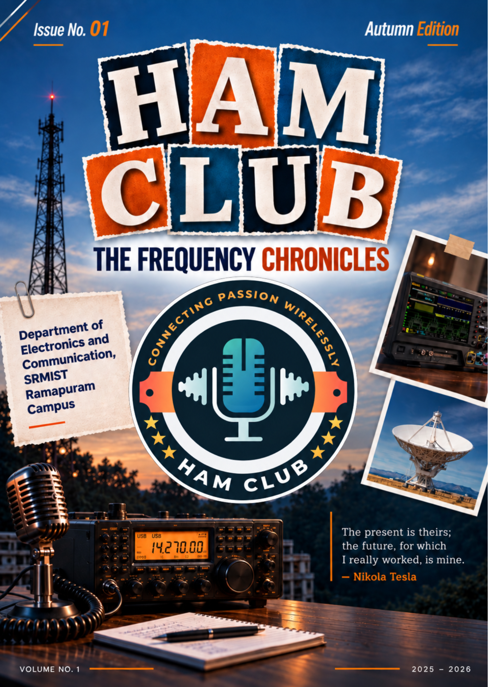

Welcome to the inaugural edition of the HAM Club Magazine. This edition showcases our vision, club activities, technical insights, and upcoming initiatives.
The HAM Club Magazine is the official publication of the HAM Club. It highlights technical articles, student innovations, workshop experiences, research insights, event reports, and club achievements.
This is the very first edition of the HAM Club Magazine. More exciting editions featuring student contributions, technical innovations, and club activities will be published in the future.